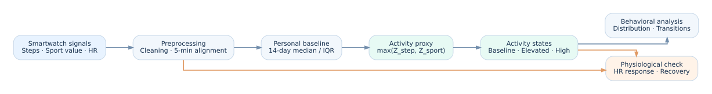

Wearable Intelligence / Research showcase
Personal Baseline Activity Analysis
Individualized activity states and physiological response insights
Collection period
28 days
Continuous wearable observation
Personal baseline
14 days
Median + IQR normalization
Valid 5-min samples
3,685
Of 4,032 evaluation bins
Data retention
91.39%
After data quality filtering
Activity State Distribution
SHARE OF VALID 5-MIN SAMPLES
State thresholds on normalized activity proxy: Baseline < 0.5, Elevated 0.5–3, High ≥ 3.
State Transition Matrix
P(NEXT STATE | CURRENT STATE)
| Baseline | Elevated | High | |
|---|---|---|---|
| Baseline | 0.78 | 0.15 | 0.07 |
| Elevated | 0.40 | 0.35 | 0.25 |
| High | 0.20 | 0.29 | 0.51 |
Rows are normalized transition probabilities reported in the manuscript.
≈ 0.285
Proxy–HR correlation
13.27 min
Mean observed HR recovery
124
Recovery events
End-to-End Research Architecture
Activity labeling is derived from movement-related signals. Heart rate is reserved for a separate physiological cross-check.

01 · Synchronize
Clean sensor readings, align step/sport value streams with 5-minute averaged heart-rate data.
02 · Normalize
Use each individual's 14-day median and interquartile range as a relative reference.
03 · Interpret
Generate an activity proxy, classify three states, then examine transitions and HR responses.
ActivityProxy = max(Z_step, Z_sport)
Association with HR
≈0.285
Positive, modest correlation
Mean recovery
13.27 min
Median: 5 minutes
Recovery events
124
Identified in the case study
Physiological Evaluation Approach
Heart rate did not contribute to activity state classification. Its relationship with state changes was analyzed afterward, helping assess physiological consistency without using HR to define the states being examined.
| Analysis | Manuscript-reported observation |
|---|---|
| State-specific heart rate | Central HR distribution increased from Baseline to Elevated to High |
| Proxy–heart rate association | Approximate correlation coefficient of 0.285 |
| Temporal relationship | Highest cross-correlation at lag 0 with 5-minute aggregation |
| Recovery pattern | 124 events, mean 13.27 minutes, median 5 minutes |
These observations indicate within-participant physiological consistency; they are not activity-recognition accuracy or clinical diagnostic performance.